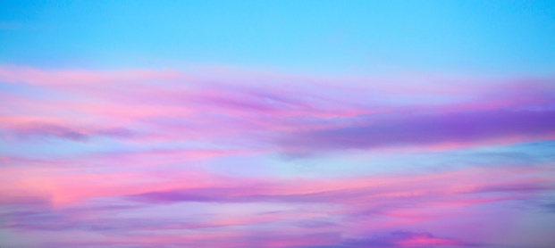
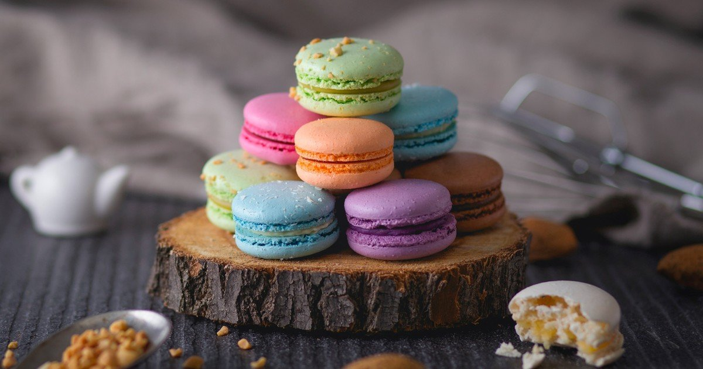
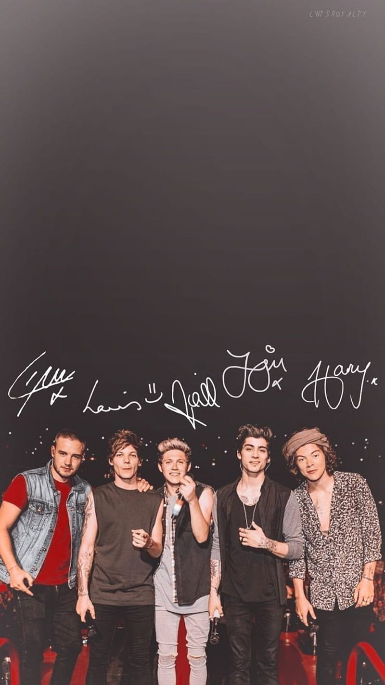
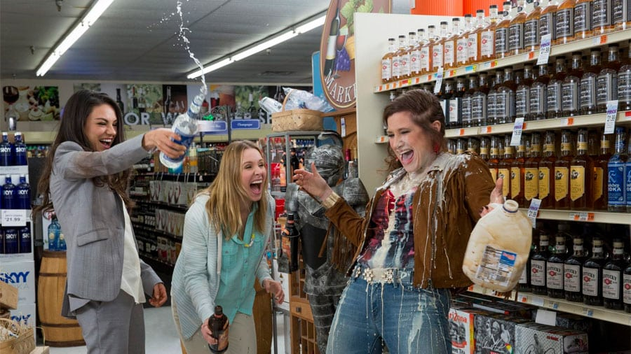
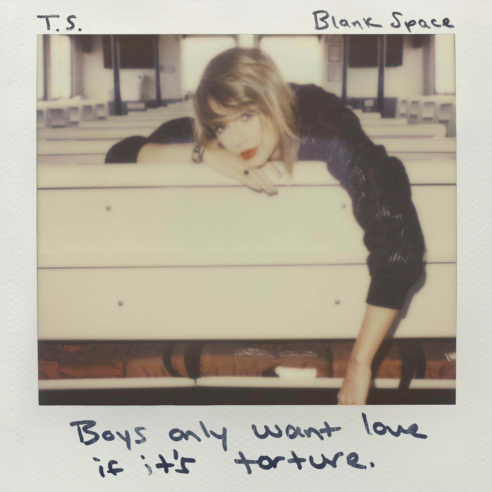
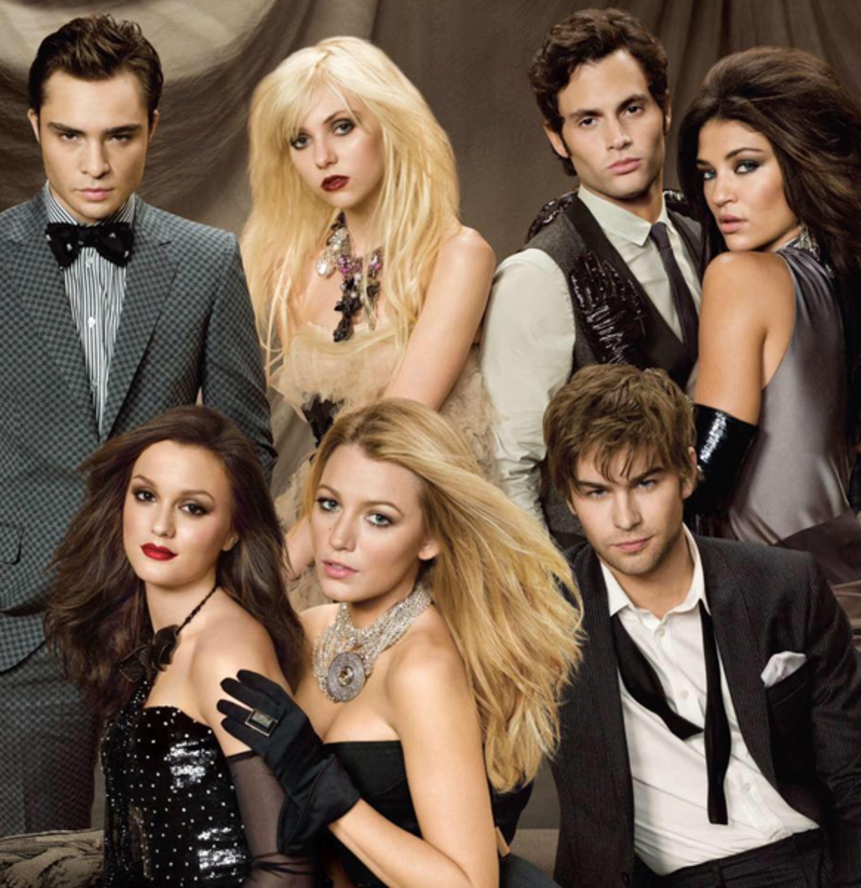

Estoy haciendo mi blog y espero les guste mucho,se hablara de todos los temas
Lo primero que les voy a mostrar es este atardecer, los colores que tienen se ven muy bonitos,a mi me gustan los atardeceres asi, ya que los colores no solamente son rojizos, sino que tambien se puede ver un poco morado y un poco de rosa.Simplemente me gustan mucho y aqui les muestro uno de ellos.
Aqui les voy a mostrar unos macarons de diferentes colores y se los estoy enseñando porque son un postre super rico. se los recomiendo, pero te voy a dar un consejo,deben de seguirse paso a paso la receta de ellos, ya que, si te pasas con alguna cantidad de sus ingredientes, ya no estaran ricos. Su consistencia debe ser un poco crujiente por fuera y por dentro debe ser blando y pueden ser del sabor que tu quieras
En esta foto les voy a mostrar a mi banda favorita, yo creo que muchos ya la conocen y es One Direction, una de las mejorees boyband's de todos los tiempos, incluso alcanzo el mismo exito de los Beatles. Aqui se puede ver a Niall Horan, Harry Styles, Zayn Malik, Louis Tomlinson y Liam Payne en su cuarta gira mundial, del disco Four.
En esta foto les voy a mostrar una escena de una de mis peliculas favoritas, se llama "El club de las madres rebeldes", en esta escena ellas van a un supermercado a comprar lo que necesitaban para sus casas e hijos. Las tres se encuentran y se dan cuenta que estan cansadas de todo lo que tienen que hacer todos los dias y empiezan a hacer destrozos en el super y es súper graciosa la escena
Esta es la portada de una de mis canciones favoritas y es de la cantante Taylor Swift, esta cancion se llama "Blank Space" y la lanzo como su primer sencillo pra su album 1989. Aparte de la cancion lo que tambien me gusta mucho son todos los outfits que utilizo en el video y tambien las locaciones. Incluso este video es uno de los videos con mas vistas en Youtube, te recomiendo verlo no te arrepentiras, y tambien si tienes la oportunidad puedes escuchar sus otras canciones. 
Esta es una de las mejores series de todo el mundo, es la serie de "Gossip Girl", cuando digo que es la mejor es porque la vi completa y me encanto y tambien a todas las personas que les he preguntado acerca de ella. Es una serie un poco viejita pero se sigue viendo mucho y eso quiere decir que es una buena serie. Los personajes que se llegan a ver aqui son Blair Waldorf, Serena Vanderwodsoon, Nate Archivald y Chuck Bass que son los principales, y los otros que se ven ahi son los secundarios que son Vanessa, Dan y Jenny Humprey. Puedo decir que casi no me gustan las series porque en cierto tiempo me aburren pero esta jamas lo hizo y vi las 5 temporadas, te la recomiendo mucho.
